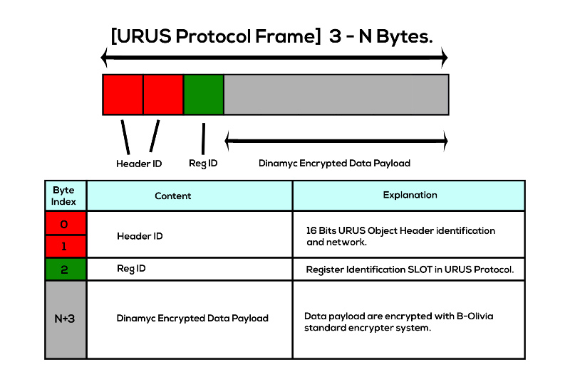
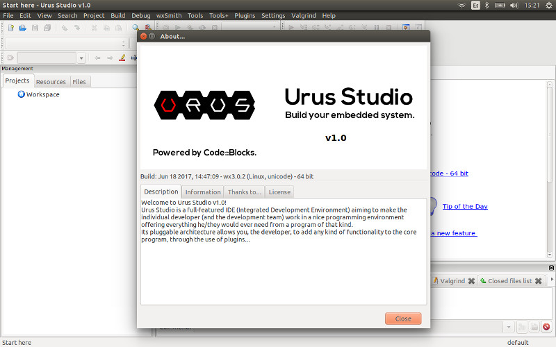
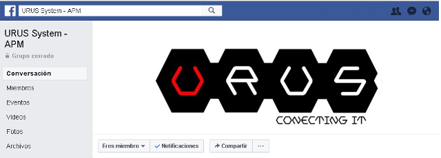

Urus Ecosystem
Tip
Urus docs base site under construction... We are making done all Urus Ecosystem documentation base very soon
{kind=link}
About:¶Urus Ecosystem has the next sub-projects: Urus use the APM API and HAL to maximize the use in robotics world. With URUS you can make an automated home control (DOMOTIC systems), work like a LEGO mindstorm, profesional and industrial use like a PLC. Urus System is the first autoconfigurable and scalable BRAIN MODULE and a CAPE IO for ROBOTICS and AUTOMATED Systems, thinking on industrial aplications. We highlighted that an owner with APM 2.x (legacy) board owner can work with lastest Ardupilot releases version. This system have two parts that their work together:
The Urus System purpose are giving to us a comunication and development way to ardupilot api with an easy and realiable system through Urus Protocol, for example, if you are an owner apm 2.x board and you want to use the last master ardupilot version, then you can use the urus cape io and connect it with a Raspberry pi or NuttX board or with a PX4 board (work in progress for this board). You can develop and build it with the native Urus Studio IDE and toolchains for AVR and ARM baremetal targets and for Unix/Posix like OS Embedded systems such as NuttX and Linux OS. Urus System come with customized and performed real time kernel based on linux kernel, there is a second version to make user graphics interface for general or particular purposes. Community:¶Urus community grow up thanks to the Ardupilot community and its sets Urus like Ardupilot project purposes. Community is what really sets ArduPilot apart from the closed-source offerings in the market. An area for open discourse on the ArduPilot projects direction between developers and its customers. Here are some of the places you can find ardupilot users and developers: Developer Community:¶All things for those who want to get into the nuts and bolts of Urus Ecosystem development can be found in the developer portal. ie. Gitter Chat Features:¶
|
{kind=link}
{kind=link}
{kind=link}
{kind=link}